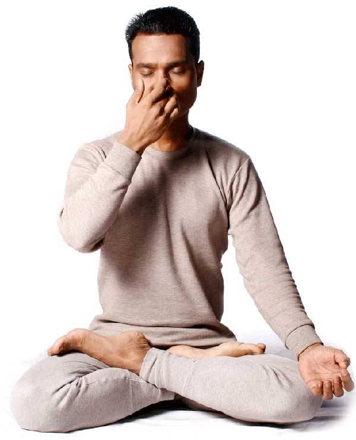
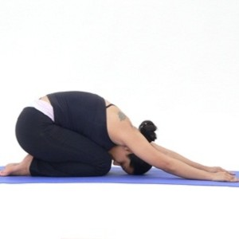

Shashankasana(Hare Pose): This exercise will increase your breathing power by strengthening the neck and shoulder muscles, which support the muscles that enhance our breath. This yoga posture also helps to relive stress which often triggers breathing woes..

Pranamasan(Prayer Pose): Kneel down on the floor, just as people do while performing namaz. Inhale and exhale while leaning your head forward and touching the floor; place the palms on either side of your head on the floor. If possible try to hold your ankles with your hands. Slowly lift your head and return to the original position. This posture is beneficial for asthma patients. This yoga pose alo helps to manage stress. *But do not practice this if you have neck pain.

Pranayama(Abdominal Breathing): This yoga helps you clear your lungs by improving blood flow of the lymph. Pranayama asana is a technique to prevent lungs and other tissues from getting infected. This breathing exercide reduces the stress and provides the body an overall sense of wellbeing. Lie down on your back or sit straight, fold your knees and place one hand on your abdomen and the other hand on your chest.
NadiShodhana(Alternate-Nostril Breathing): "This is same as doing Pranayama". Alternate-Nostril breathing helps in refining the breath and brings balance between the body and mind. Close one nostril with your thumb and take breaths using the other nostril. First exhale and then inhale through your left nostril and do the same with right nostril. Continue doing this at least ten times.